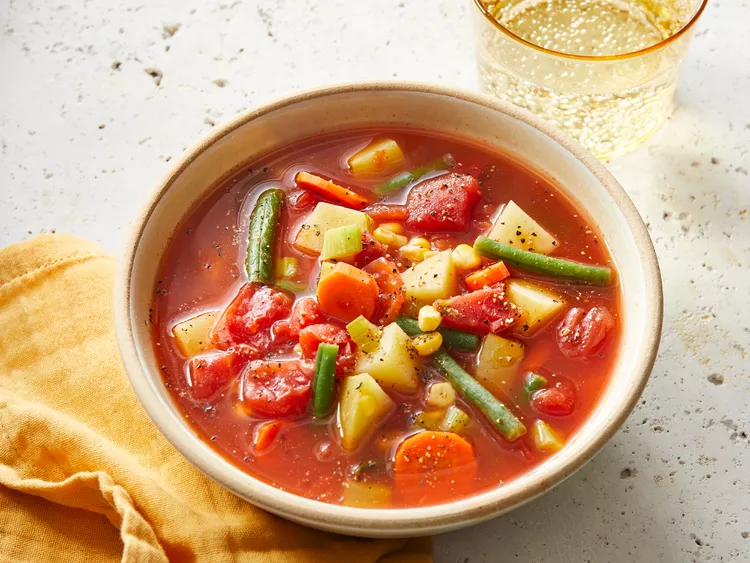

Vegetable Soup
Home

Description
Low-fat, but filling tomato-based vegetable soup.
Ingredients
- 1 (14.5 ounce) can diced tomatoes
- 1 (14 ounce) can chicken broth
- 1 (11.5 ounce) can tomato-vegetable juice cocktail
- 2 carrots, sliced
- 2 stalks celery, diced
- 1 large potato, diced
- 1 cup chopped fresh green beans
- 1 cup fresh corn kernels
- 1 cup water
- Salt and pepper to taste
- 1 pinch Creole seasoning, or more to taste
Steps
- Gather all ingredients
- Combine tomatoes, chicken broth, tomato juice, carrots, celery, potato, green beans, corn, and water in a large stockpot. Season with salt, pepper, and Creole seasoning.
- Bring to a boil over medium heat and simmer until vegetables are tender, about 30 minutes.
- Serve hot and enjoy!